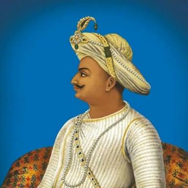

TIPU SULTAN
Tipu Sultan (born Sultan Fateh Ali Sahab Tipu, 20 November 1750 – 4 May 1799), also known as the Tipu Sahib, was a ruler of the Kingdom of Mysore. He was the eldest son of Sultan Hyder Ali of Mysore. Tipu Sultan introduced a number of administrative innovations during his rule, including his coinage, a new Mauludi lunisolar calendar, and a new land revenue system which initiated the growth of the Mysore silk industry. He expanded the iron-cased Mysorean rockets and commissioned the military manual Fathul Mujahidin, and is considered a pioneer in the use of rocket artillery. He deployed the rockets against advances of British forces and their allies during the Anglo-Mysore Wars, including the Battle of Pollilur and Siege of Seringapatam. He also embarked on an ambitious economic development program that established Mysore as a major economic power, with some of the world's highest real wages and living standards in the late 18th century.
Napoleon Bonaparte, the French commander-in-chief, sought an alliance with Tipu Sultan. Both Tipu Sultan and his father used their French-trained army in alliance with the French in their struggle with the British, and in Mysore's struggles with other surrounding powers, against the Marathas, Sira, and rulers of Malabar, Kodagu, Bednore, Carnatic, and Travancore. Tipu's father, Hyder Ali, rose to power capturing Mysore, and Tipu succeeded Mysore upon his father's death in 1782. He won important victories against the British in the Second Anglo-Mysore War and negotiated the 1784 Treaty of Mangalore with them after his father died from cancer in December 1782 during the Second Anglo-Mysore War.

Tipu became involved in conflicts with his neighbors, including the Maratha–Mysore War which ended with Maratha and Tipu signing treaty of Gajendragad, as per which Tipu Sultan was obligated to pay 4.8 million rupees as a one time war cost to the Marathas, and an annual tribute of 1.2 million rupees, In addition to returning all the territory captured by Hyder Ali.
Tipu remained an implacable enemy of the British East India Company, renewing conflict with his attack on British-allied Travancore in 1789. In the Third Anglo-Mysore War, he was forced into the Treaty of Seringapatam, losing a number of previously conquered territories, including Malabar and Mangalore. He sent emissaries to foreign states, including the Ottoman Empire, Afghanistan, and France, in an attempt to rally opposition to the British.
In the Fourth Anglo-Mysore War, the forces of the British East India Company were supported by the Nizam of Hyderabad. They defeated Tipu, and he was killed on 4 May 1799 while defending his fort of Srirangapatna.
He was one of the few South Indian kings to provide stiff resistance to British imperialism, along with Hyder Ali. He is applauded as a ruler who fought against British colonialism. Similarly he has been a controversial figure and criticized for his atrocities against Hindus, Christians, and Mappla Muslims.